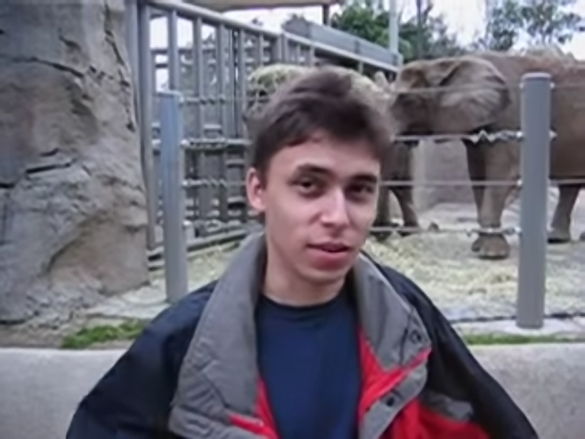

Clarity 1.1 — 실제 GPU 출력 비교
미리 만든 개선 효과가 아닌, 동일 소스에 실제 기존/개선 셰이더를 실행한 PNG입니다. 모든 비교는 샤프닝 0입니다. 이미지를 클릭하면 원본 크기로 열립니다. 실제 유튜브 프레임에는 고해상도 정답이 없습니다.
검증 조건·수치·한계 보고서실제 유튜브에서 캡처한 동일 프레임
기존 Balanced · 샤프닝 0
새 실사 모드 · 샤프닝 0새 애니메이션 모드 · 샤프닝 0 line-art
natural-texture
 고해상도 합성 기준기존 Balanced개선 Balanced
고해상도 합성 기준기존 Balanced개선 Balancedcompressed-texture